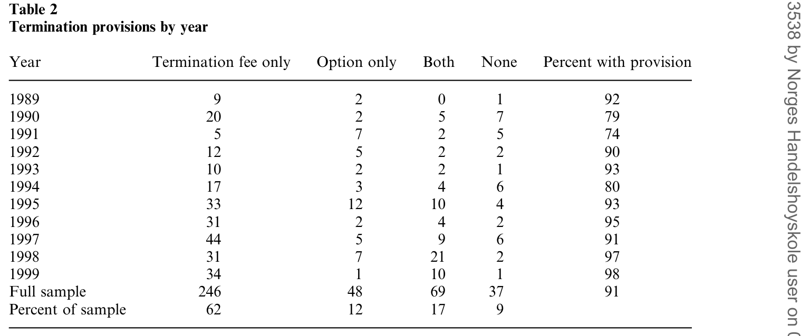
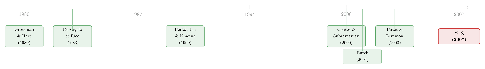

终止费到底是「锁门」还是「关灯」？——一桩被坏数据带偏二十年的收购公案
本文读的是 Boone & Mulherin (2007, Review of Financial Studies)：他们从美国证监会（SEC）申报文件里手工重建了一套终止条款与竞价过程的新数据，结果发现——此前文献赖以立论的 SDC 数据系统性地少报了终止条款，尤其在样本早期，凭空制造出一条「逐年上升」的伪趋势；这条伪趋势又进一步把终止条款和司法判决、收购方立足持股、交易规模都「关联」了起来。把数据换成 SEC 口径之后，这些关系全部消失：终止条款一直就很普遍（全样本 91%），而且它不是「截断」竞价，而是在为竞价收尾。
1 一个让法官也吵起来的问题
先讲一个画面。两位内部人手里攥着一家目标公司 65% 的股份，他们和某个收购方签了协议，承诺把票投给这个人。2003 年，特拉华州法院在 Omnicare 一案里以微弱多数判这份投票协议无效，理由是它「剥夺了少数股东的权利」。但持反对意见的法官撂下一句很重的话：契约条款「不能被放在真空里审视」，法院「应当审视整个竞价过程」。（见 Omnicare, Inc. v. NCS Healthcare, Inc., 818 A.2d 914, 2003 Delaware。）
这场分裂的判决，恰好戳中了一个困扰法学与金融学几十年的老问题：在公司收购里，目标公司给收购方的那些 终止条款 (termination provisions)——具体说就是 终止费 (termination fee) 和 股票期权协议 (stock option agreement)——到底在干什么？
一种说法听起来很顺耳、也很吓人：这些条款是管理层用来「锁门」的工具。给某个中意的买家发一笔分手费、或者一份能低价买进目标股票的期权，等于事先抬高了其他竞争者的进入成本，把人家挡在门外。管理层借此保住自己的饭碗，股东却因为竞价不充分而吃亏。这就是 堑壕假说 (entrenchment hypothesis)，它预言：终止条款与收购竞争负相关。
可还有另一种完全相反的说法。接着，一个自然的问题是：如果这些条款真的有害，为什么签的人这么多、而且签了这么多年？
2 两个假说：是「锁门」，还是「关灯送客」？
要理解这篇文章的张力，得先把两个假说讲透，因为全文的反转就架在它们之间。
堑壕假说的逻辑前面说了：管理层用条款给「钦定买家」开后门，自己换来职位安全（Kahan and Klausner 1996），股东则因竞争减少而受损（Bulow and Klemperer 1996; Schwartz 1986）。（关于目标公司高管如何在私下谈判里为自己谋利，可参见《最后一分钟的两百万股期权：当目标公司 CEO 在谈判桌底下「自己给自己发薪」》。）
但真正关键的另一面，是 信息/承诺假说 (information/commitment hypothesis)。它其实由两条独立的逻辑拧成一股：
第一条是信息逻辑。 早在 Grossman and Hart (1980) 就指出，从一桩收购公开宣布、到最终交割之间有一段时间窗口；在这段时间里，后来的潜在买家可以「搭便车」——白白享用最初那个买家在谈判、尽调、出价过程中生产出来的信息（Berkovitch and Khanna 1990; Berkovitch, Bradley, and Khanna 1989）。问题在于：如果第一个买家预见到自己辛苦挖出来的信息会被人免费抄走，他一开始就不愿意进场了。于是出价者越来越少，目标股东反而拿不到好价钱。终止条款，正是用来补偿这第一个买家、诱使他愿意「先下场」的契约工具。
第二条是拍卖逻辑。 拍卖理论里有个著名结论：卖方做出「承诺」能最大化自己的收入（McAfee and McMillan 1987）。在收购的语境下，如果买家们觉得竞价永远没有尽头，他们就不会拼命出价（Klemperer 1998）。终止条款恰恰是目标公司向市场承诺「这场拍卖会结束」的一种机制（Macey 1990; Thomas and Hansen 1992; Fraidin and Hanson 1994; Povel and Singh 2005）。
所以你看，信息/承诺假说给出的是一个截然相反的预言：终止条款促进竞争。它不是在锁门，而是在给一场已经热闹起来的拍卖体面地「关灯送客」。
一个容易被忽略的细节：终止费和股票期权虽然都给最初的买家发钱，但股票期权还附带投票权（Wasserstein 2000）。在需要目标股东表决的换股交易里，这份投票权能更牢地把交易「锁」给这个买家。所以本文预测——股权对价的交易，更可能用股票期权而非现金分手费。
3 文献为什么会站到「堑壕」这边？
到这里，故事本该是个干净的两军对垒。可问题是，截至本文之前的实证研究——Coates and Subramanian (2000)、Burch (2001)、Officer (2003)、Bates and Lemmon (2003)——几乎一边倒地得出了同一个结论：终止条款与公开收购竞价负相关。Bates and Lemmon (2003, p. 471) 干脆把标题写成「终止费截断了一个自然的竞价过程」。证据似乎压倒性地站在堑壕假说一边。
如果这是真的，那么在法官眼里，终止条款就该被打上「有害」的标签。
然后，本文的两位作者问了一个最朴素、却最致命的问题：这些结论赖以成立的数据，靠得住吗？
4 真正关键的一步：把数据换掉
本文的核心贡献，不在某个花哨的识别策略，而在一套手工重建的数据。作者研究了 1989–1999 年间的 400 桩收购（来自 Mulherin and Boone (2000) 的 Value Line 样本，其中 377 桩完成、23 桩撤回；103 桩要约收购、297 桩合并；147 桩纯现金、253 桩含股权对价）。对每一桩，他们都去翻了 SEC 的原始申报文件——合并看 14A 和 S-4，要约收购看 14D——一条一条地把终止条款抠出来。
抠出来的第一个事实就让人愣住：全样本里 91% 的收购带有终止条款（62% 只有终止费，12% 只有股票期权，17% 两者都有，只有 9% 什么都没有）。更要命的是时间维度——1989 年（样本第一年）就有 92% 的交易带条款，1999 年（最后一年）是 98%，整段时间里最低也有 74%（1991 年）。根本没有什么「逐年上升」的趋势，终止条款从一开始就无处不在。
如表 2 所示，这种高位且平稳的使用率贯穿了整个样本期。

Table 2: summarizes the incidence of the termination provisions in the
可这就和文献对不上了。Coates and Subramanian (2000, p. 315) 报告说他们样本里带终止条款的交易从 1988 年的 40% 涨到了 1998 年的 80%；Bates and Lemmon (2003, p. 472) 报告终止费从 1989 年的 2% 涨到 1998 年的 60%。同样的上升趋势在 Officer (2003)、Betton, Eckbo, and Thorburn (2005) 那里都出现了。
于是反转出现了。两边的差别，根子在数据来源。前人用的是 SDC（证券数据公司）的数据库，而本文证明：SDC 系统性地漏报了终止条款。 在同样这 400 桩交易上，SEC 文件显示 91% 有条款，SDC 却只报了 66%——整整差了 25 个百分点。而且这个缺口在样本早期最大：1989、1990 两年差距在 50% 以上，1993、1996 也差 40% 以上，1997 年之后才慢慢收窄。换句话说，SDC 不是均匀地漏，而是早年漏得多、晚年漏得少——这恰恰会凭空捏造出一条向上的伪趋势。
为了排除「是不是只有你这个样本特殊」的质疑，作者又从 SDC 1996 年的全部交易里（限定目标为美国上市公司、交易额至少 5000 万美元）随机抽了 73 桩。结果 SDC 只把其中 23 桩（31.5%）标为带条款，而按 SEC 文件，57 桩（78%）其实都有。SDC 漏报，是普遍现象。
5 一条伪趋势，如何带歪了三组结论
到这一步，故事的杀伤力才真正显现。一条假的时间趋势，会顺着所有「也在随时间变动」的变量，制造出一连串假的相关性。
第一组，是和司法判决的关系。Coates and Subramanian (2000) 推测终止条款的兴起和两个关键判例绑定：1993 年 12 月的 Paramount 案、1997 年 3 月的 Brazen 案。第二组，是和收购方 立足持股 (toehold) 的关系——而 Betton, Eckbo, and Thorburn (2005) 指出，立足持股本身是逐年下降的。一个虚假地上升、一个真实地下降，两者自然会呈现出强烈的负相关。第三组，是和交易规模的正相关。
作者在 Table 3 的 Panel B 里做了一组对照 logit 回归，左边四列用 SEC 数据当因变量，右边四列用 SDC 数据，自变量完全相同（Paramount 虚拟变量、Brazen 虚拟变量、立足持股、交易规模）。结论一目了然：
- 用 SEC 数据，这些时间敏感变量和规模变量没有一个显著。立足持股的系数是
5.759（p 值0.594），交易规模-0.034（p 值0.759），整个模型的 p 值在前三列分别是0.655、0.633，谈不上显著。 - 换成 SDC 数据，前人报告过的那些显著关系全回来了：立足持股变成
-14.213且显著（p 值0.024），交易规模变成0.318（p 值0.000），Brazen 虚拟变量1.273（p 值0.000），模型 p 值清一色0.000。
同一批交易、同一组自变量，只因为换了一套测量终止条款的尺子，结论就从「什么都不显著」翻成「什么都显著」。这是测量误差能把实证结论彻底带偏的一个教科书级案例。（在这个意义上，它和那些因变量「构造方式」决定成败的故事是同一类教训，可参见《因子模型的成败，藏在一个变量的「构造方式」里》。）
6 把「竞争」也重新量一遍
数据修好了，还剩最后一块拼图：竞争本身。
前人之所以得出「终止条款抑制竞争」，是因为他们用的竞争口径太窄——只看公开的收购拍卖。但一桩收购在公开宣布之前，往往已经经历了一轮私下的、看不见的竞价。Bates and Lemmon (2003, 脚注 2) 自己也承认，分析这种非公开的竞价过程才能真正检验信息/承诺类理论，只是苦于没有现成数据而作罢。
本文恰恰用 SEC 文件里的「交易背景（background of the merger）」部分，把这段事前的私下竞价捞了出来。一旦把这部分竞争算进去，终止条款与竞争的关系就由负转正：它和更深的竞价过程正相关，符合信息/承诺假说。
作者还顺手填补了另一个空白——股东投票协议。Table 4 显示，样本里有 68 桩交易带 股东投票协议 (shareholder voting agreement)，承诺投票的股份平均占 41%、中位数 40%。按信息/承诺假说，投票协议是终止条款的替代品：对有大股东的目标公司（Shleifer and Vishny 1986），让大股东承诺投赞成票，本身就能起到「承诺交易会完成」的作用。证据也对得上——在 37 桩完全没有终止条款的交易里，有 8 桩用了股东投票协议、20 桩存在持股关联，只有 10 桩是真的没有任何股权纽带。承诺，可以通过不止一条路达成。（关于用提前锁定的股权来在控制权争夺里建立承诺，可参见《一笔提前卖出的股权，是为了让你将来「抢着加价」》。）
于是这篇文章把开头那个法官的争论，给出了一个偏向「少数派」的答案：契约条款确实不能放在真空里看；当你把整个竞价过程——包括公开宣布之前那一段——都纳进来，终止条款看起来不像在截断竞价，倒像是在为它收尾。
7 文献脉络
把这条线索捋一遍，会看到一个很典型的「理论先行、实证追赶、再被数据修正」的演进。
最早是 Grossman and Hart (1980) 提出收购里的搭便车与自由骑士问题，奠定了信息逻辑的地基。紧接着 DeAngelo and Rice (1983) 把「某个契约装置到底是壕沟管理层、还是界定产权」这个根本问题摆上了台面，后续一系列关于反收购章程修正案、毒丸的研究（Linn and McConnell 1983; Jarrell and Poulsen 1987; Ryngaert 1988; Malatesta and Walkling 1988）都在这个框架里打转，直到 Comment and Schwert (1995) 给出更全面的证据，说这些防御手段并不系统性地损害股东。

信息/承诺这条线由 Berkovitch and Khanna (1990) 等人接力推进；与此同时，拍卖理论这边 McAfee and McMillan (1987)、Klemperer (1998) 把「承诺最大化卖方收入」讲清楚。到了世纪之交，实证研究密集登场——Coates and Subramanian (2000)、Burch (2001)、Officer (2003)、Bates and Lemmon (2003) 几乎一致地报告终止条款抑制竞争。本文 (2007) 就站在这个位置上，用一套手工 SEC 数据把这条「共识」连根掀翻，把天平重新拨回信息/承诺假说一侧。
8 评论与延伸（Q&A + 研究方向）
(a) 几个可能的疑问
Q：终止费和股票期权协议有什么本质区别？为什么本文要把它们分开？
两者都承诺：一旦目标最终被别人买走，就给最初的买家一笔钱。区别在于股票期权还附带投票权，并且其价值取决于行权价、目标被竞购时的价格以及协议里的封顶条款，而终止费是合同里写死的一个固定金额。这个区别在需要股东表决的换股交易里尤其重要，所以本文预测股权对价交易更倾向用期权。
Q：这篇文章有没有干净的因果识别？还是只是「换了套更好的数据」？
坦白说，它主要是一篇测量（measurement）论文，核心贡献是数据准确性，而非外生冲击式的识别。Table 3 的对照回归并不声称因果，它要证明的恰恰是相反方向——前人那些「显著关系」是测量误差的产物。它的说服力来自对同一批交易做 SEC vs SDC 的逐项比对，而非工具变量或断点。
Q：终止条款全样本 91% 这么高，会不会本身就说明它是「标配套话」，没什么信息含量？
这正是反直觉之处。如果它只是无意义的模板条款，就不该和竞价深度、与股东投票协议的替代关系系统性地挂钩。本文的发现是：在它缺席的少数交易里，承诺往往由别的机制（投票协议、持股关联）补上了——这说明「承诺」这件事是实打实在被定价的。
Q：SDC 为什么偏偏在早年漏报得更厉害？
文章没有给出 SDC 内部的录入机制解释，但用数据说话：把 SEC 与 SDC 的差额对一个简单线性时间趋势回归，系数显著为负。此外作者还发现，SDC 数据的准确性与公司规模正相关——交易越大，SDC 越可能录到条款。这两点叠加，足以制造一条向上的伪趋势。
Q：为什么前人会忽略「私下竞价」这一段？
不是没意识到，而是没数据。Bates and Lemmon (2003) 在脚注里明说，分析非公开竞价能检验信息/承诺理论，但因为缺乏可观测数据而放弃。本文的巧劲就在于：SEC 申报文件的「交易背景」叙述里，其实藏着这段事前竞价的痕迹，只是得手工去读。
Q：那 Omnicare 判决到底支持了哪一方？
多数派担心投票协议剥夺少数股东权利（接近堑壕担忧），少数派主张要看「整个竞价过程」。本文的证据更支持少数派的方法论——只看公开拍卖会低估竞争，把事前私下竞价算进来后，这类承诺装置更像在促进而非压制竞争。
(b) 几个可能的研究问题与提案
1. 把「SEC 文件 vs 商业数据库」的偏差搬到公司债市场。 【经济故事】终止条款的故事本质是「商业数据库系统性漏报某类合约条款，从而带偏一整条文献」。在公司债里，契约条款（covenants）、可赎回/可回售条款的记录同样高度依赖 Mergent FISD 等数据库，而原始募集说明书才是真相。如果这些数据库也存在与时间或发行规模相关的漏报，那么大量关于「契约保护与信用利差」的实证可能也站在流沙上。 【可行性】中。需要抽样比对募集说明书与 FISD，工作量大但完全 doable；识别上属于测量验证，不需要外生冲击。
2. 外资买家与终止条款。 【经济故事】跨境收购里，信息生产成本和搭便车问题可能更严重（语言、监管、尽调成本），按信息/承诺假说，外资买家作为「第一个下场的人」更需要终止条款来补偿。能否用一批跨境交易检验：外资主导的收购是否更频繁、更慷慨地附带终止费？ 【可行性】中。SDC/Refinitiv 有跨境并购标记，但条款数据仍需回到 SEC/各国监管文件核实；识别可借助母国制度差异。
3. 终止条款的「承诺」与债权人。 【经济故事】终止条款锁定交易完成，对目标公司的债权人意味着什么？若交易完成概率被人为抬高，杠杆收购里的信用风险定价会不会随之变化？这把信息/承诺假说和信用市场连了起来。 【可行性】中偏低。需要把终止条款数据匹配到目标公司债券的二级市场利差，事件窗口要干净，样本可能偏小。
4. 用大语言模型批量读「交易背景」叙述。 【经济故事】本文最贵的一步是手工读 SEC 文件里的私下竞价过程。如今可以用 LLM 大规模抽取「background of the merger」中的竞价者数量、轮次、报价序列，把私下竞价的度量从几百桩扩到几万桩，重新检验终止条款与真实竞争的关系。 【可行性】高。EDGAR 全文可批量下载，LLM 抽取结构化竞价信息技术上成熟；主要风险是抽取准确性需人工抽检校准。
9 我的判断
这篇文章的贡献，不在理论的新意，而在它示范了测量本身可以是一项一流的实证贡献。它没有发明新模型，却用一套笨功夫的手工数据，把一条延续多年、被多篇顶刊背书的「共识」（终止条款截断竞价）翻了案，并指出这条共识的病根是一个商业数据库随时间变化的系统性漏报。对任何依赖现成数据库做实证的人，这都是一记响亮的提醒。
要说对识别的担忧，主要有两点。其一，全文的因果分量其实不重——它有力地证伪了前人的伪相关，但「终止条款促进竞争」这一正面命题，靠的仍是相关性证据（私下竞价更深的交易更可能带条款），存在反向因果与遗漏变量的空间：也许是那些天然更具竞争性的目标，才更需要、也更有能力签下条款。其二，样本来自 Value Line、且只有 400 桩，外推到更广的中小交易宇宙时要谨慎——尽管作者用 73 桩随机样本部分回应了这一点。
后续我最想看到的，是把这套「读原始文件、量私下竞价」的方法用 LLM 规模化之后，能否在一个数量级更大的样本上，给终止条款与竞争的因果关系找到一个真正外生的来源——比如某次改变终止费可执行性的州法变动。那才能把这场「锁门还是关灯」的争论彻底钉死。
参考文献
Bates, T., and M. Lemmon (2003). Breaking Up is Hard to Do? An Analysis of Termination Fee Provisions and Merger Outcomes. Journal of Financial Economics 69, 469–504.
Berkovitch, E., M. Bradley, and N. Khanna (1989). Tender Offer Auctions, Resistance Strategies, and Social Welfare. Journal of Law, Economics, and Organization 5, 395–412.
Berkovitch, E., and N. Khanna (1990). How Target Shareholders Benefit from Value-Reducing Defensive Strategies in Takeover. Journal of Finance 45, 137–156.
Betton, S., E. Eckbo, and K. Thorburn (2005). The Toehold Puzzle. Working paper, Tuck School of Business, Dartmouth College.
Boone, A., and J. H. Mulherin (2007). Do Termination Provisions Truncate the Takeover Bidding Process? Review of Financial Studies 20(2), 461–489.
Bulow, J., and P. Klemperer (1996). Auctions Versus Negotiations. American Economic Review 86, 180–194.
Burch, T. (2001). Locking Out Rival Bidders: The Use of Lockup Options in Corporate Mergers. Journal of Financial Economics 60, 103–141.
Coates, J., and G. Subramanian (2000). A Buy-Side Model of M&A Lockups: Theory and Evidence. Stanford Law Review 53, 307–396.
Comment, R., and G. W. Schwert (1995). Poison or Placebo? Evidence on the Deterrence and Wealth Effects of Modern Antitakeover Amendments. Journal of Financial Economics 39, 3–43.
DeAngelo, H., and E. Rice (1983). Antitakeover Charter Amendments and Stockholder Wealth. Journal of Financial Economics 11, 329–360.
Grossman, S., and O. Hart (1980). Takeover Bids, the Free-Rider Problem, and the Theory of the Corporation. Bell Journal of Economics 11, 42–64.
Kahan, M., and M. Klausner (1996). Lockups and the Market for Corporate Control. Stanford Law Review 48, 1539–1571.
Klemperer, P. (1998). Auctions with Almost Common Values: The 'Wallet Game' and Its Applications. European Economic Review 42, 757–769.
McAfee, R. P., and J. McMillan (1987). Auctions and Bidding. Journal of Economic Literature 25, 699–738.
Mulherin, J. H., and A. Boone (2000). Comparing Acquisitions and Divestitures. Journal of Corporate Finance 6, 117–139.
Officer, M. (2003). Termination Fees in Mergers and Acquisitions. Journal of Financial Economics 69, 431–467.
Shleifer, A., and R. Vishny (1986). Large Shareholders and Corporate Control. Journal of Political Economy 94, 461–488.
Wasserstein, B. (2000). Big Deal. New York: Warner Books.